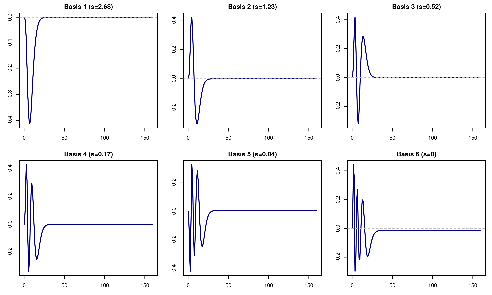
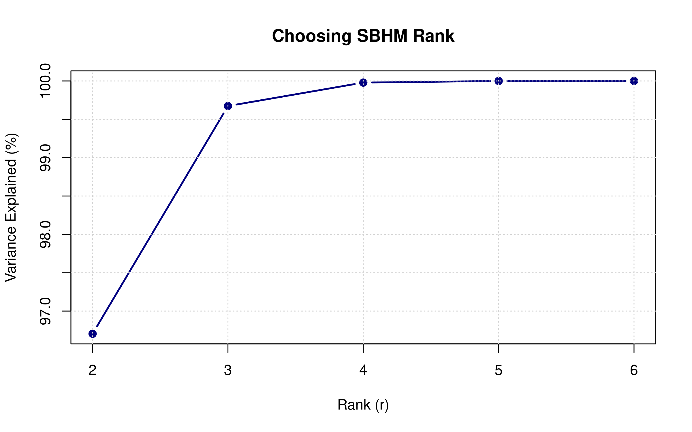
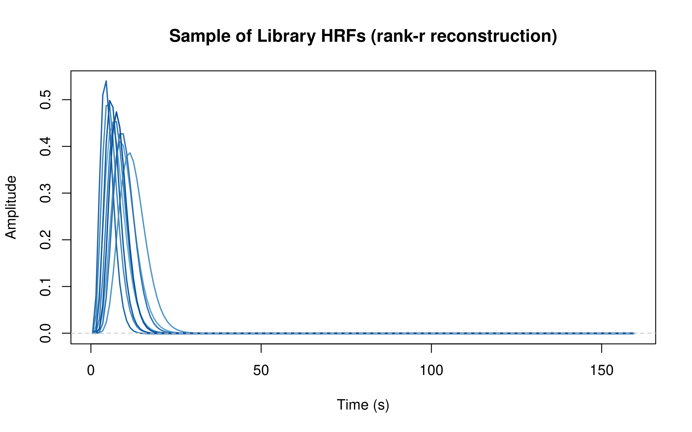
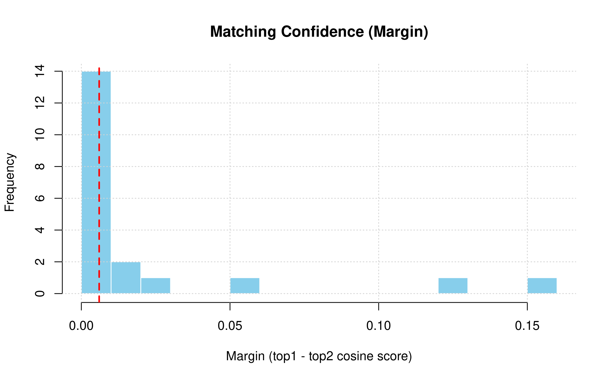
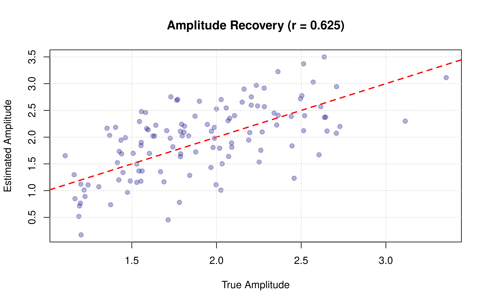
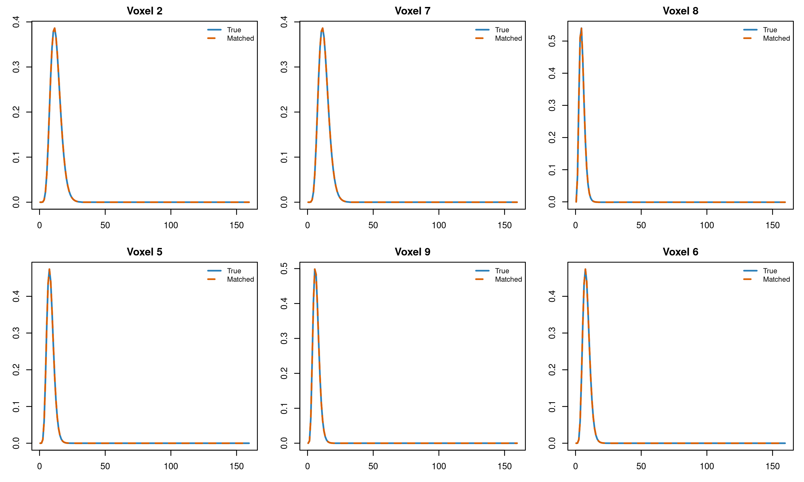
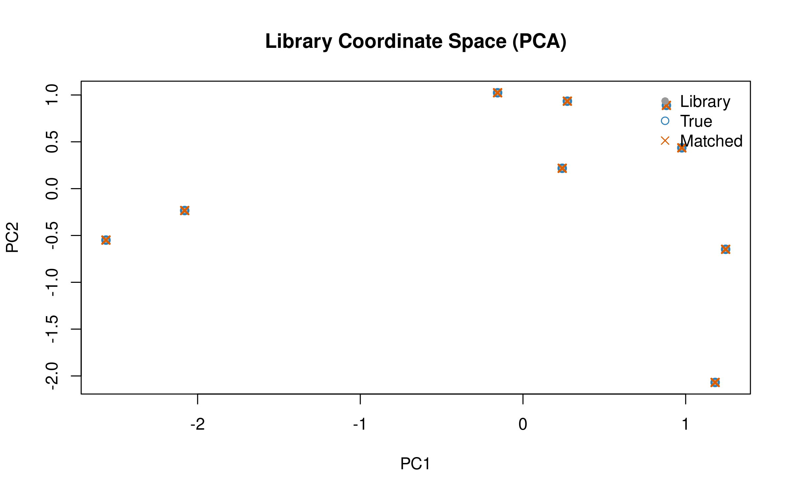

Shared-Basis HRF Matching (SBHM): Efficient Voxel-Specific HRF Estimation
Source:vignettes/sbhm.Rmd
sbhm.RmdThe Problem
Real fMRI data shows substantial HRF variability across brain regions. A single canonical HRF often fits poorly, but estimating fully unconstrained voxel-wise HRFs is expensive and noisy. SBHM offers a middle path: learn a shared basis from a library of plausible HRFs, then match each voxel to its best library member in a low-dimensional space.
The pipeline has four steps:
-
Build a shared basis from an HRF library via SVD
(
sbhm_build()) -
Prepass aggregate model fit per voxel
(
sbhm_prepass()) -
Match voxels to library members by cosine
similarity (
sbhm_match()) -
Project trial-wise coefficients to scalar
amplitudes (
sbhm_project())
In practice, lss_sbhm() runs all four steps in a single
call.
Step 1: Build the Shared Basis
We start by defining a grid of gamma HRF parameters spanning physiological variability in peak time and width.
shapes <- if (fast_mode) seq(6, 10, by = 2) else seq(5, 11, by = 1.5)
rates <- if (fast_mode) seq(0.8, 1.2, by = 0.2) else seq(0.7, 1.3, by = 0.15)
param_grid <- expand.grid(shape = shapes, rate = rates)
cat("Library size:", nrow(param_grid), "HRFs\n")
#> Library size: 9 HRFsEach grid row becomes a gamma HRF. We wrap this in a factory function
that sbhm_build() can evaluate across the grid.
gamma_fun <- function(shape, rate) {
f <- function(t) fmrihrf::hrf_gamma(t, shape = shape, rate = rate)
fmrihrf::as_hrf(f, name = sprintf("gamma(s=%.2f,r=%.2f)", shape, rate), span = 32)
}Now we build the SBHM basis. The SVD decomposes the library into a
shared time basis B, singular values S, and
per-HRF coordinates A.
sframe <- sampling_frame(blocklens = n_time, TR = TR)
sbhm <- sbhm_build(
library_spec = list(fun = gamma_fun, pgrid = param_grid, span = 32,
precision = 0.1, method = "conv"),
r = 6, sframe = sframe,
baseline = c(0, 0.5), normalize = TRUE, ref = "mean"
)
cat("B (time basis):", dim(sbhm$B), "\n")
#> B (time basis): 160 6
cat("A (library coords):", dim(sbhm$A), "\n")
#> A (library coords): 6 9
cat("Singular values:", round(sbhm$S, 2), "\n")
#> Singular values: 2.68 1.23 0.52 0.17 0.04 0Visualizing the Basis
Each basis function captures a principal mode of HRF variation: the main shape, timing shifts, width differences, and undershoot features.
par(mfrow = c(2, 3), mar = c(3, 3, 2, 1))
for (i in 1:ncol(sbhm$B)) {
plot(sbhm$tgrid, sbhm$B[, i], type = "l", col = "navy", lwd = 2,
main = paste0("Basis ", i, " (s=", round(sbhm$S[i], 2), ")"),
xlab = "Time (s)", ylab = "Amplitude")
abline(h = 0, col = "gray", lty = 2)
}
Choosing the Rank
Aim for 90–95% variance explained. We can sweep ranks to find the elbow.
ranks <- ranks_default
ve <- sapply(ranks, function(ri) {
sum(sbhm_build(library_spec = list(fun = gamma_fun, pgrid = param_grid, span = 32),
r = ri, sframe = sframe, normalize = TRUE)$S^2)
})
plot(ranks, ve / max(ve) * 100, type = "b", pch = 19, col = "navy",
lwd = 2, xlab = "Rank (r)", ylab = "Variance Explained (%)",
main = "Choosing SBHM Rank")
abline(h = 95, col = "red", lty = 2)
grid()
Library Coverage
A sample of rank-r reconstructed HRFs shows the range of shapes the library spans.
H_hat <- sbhm$B %*% sbhm$A
sel <- unique(round(seq(1, ncol(H_hat), length.out = min(ncol(H_hat), 12))))
matplot(sbhm$tgrid, H_hat[, sel, drop = FALSE], type = "l", lty = 1,
col = colorRampPalette(c("#6baed6", "#08519c"))(length(sel)),
lwd = 1.5, xlab = "Time (s)", ylab = "Amplitude",
main = "Sample of Library HRFs (rank-r reconstruction)")
abline(h = 0, col = "gray80", lty = 2)
Step 2: Generate Synthetic Data
To demonstrate recovery, we create data where each voxel uses a known HRF from the library. First, set up the experimental design.
n_voxels <- n_voxels_default
n_trials <- n_trials_default
safe_end <- max(sbhm$tgrid) - 30
onsets <- seq(20, safe_end, length.out = n_trials)Assign each voxel a random library HRF and build per-trial
regressors. The fresh set.seed() here keeps the HRF
assignment reproducible independently of earlier random draws.
set.seed(456)
true_hrf_idx <- sample(ncol(sbhm$A), n_voxels, replace = TRUE)
design_spec <- list(
sframe = sframe,
cond = list(onsets = onsets, duration = 0, span = 30)
)
hrf_B <- sbhm_hrf(sbhm$B, sbhm$tgrid, sbhm$span)
regressors_by_trial <- lapply(onsets, function(ot) {
rr_t <- regressor(onsets = ot, hrf = hrf_B, duration = 0, span = 30, summate = FALSE)
evaluate(rr_t, grid = sbhm$tgrid, precision = 0.1, method = "conv")
})Now generate the signal. Each voxel’s response is the sum of per-trial regressors projected through that voxel’s HRF coordinates, scaled by a random amplitude, plus noise.
Y <- matrix(rnorm(n_time * n_voxels, sd = 0.5), n_time, n_voxels)
true_amplitudes <- matrix(rnorm(n_trials * n_voxels, mean = 2, sd = 0.5),
n_trials, n_voxels)
for (v in 1:n_voxels) {
alpha_true <- sbhm$A[, true_hrf_idx[v]]
for (t in 1:n_trials)
Y[, v] <- Y[, v] + true_amplitudes[t, v] * (regressors_by_trial[[t]] %*% alpha_true)
}Step 3: Run the SBHM Pipeline
A single call to lss_sbhm() runs the entire pipeline.
All control lists (prepass, match,
oasis, amplitude) are optional; pass only what
you want to override. See ?lss_sbhm for full parameter
documentation.
res_sbhm <- lss_sbhm(
Y = Y, sbhm = sbhm, design_spec = design_spec,
return = "both"
)
cat("Amplitudes:", dim(res_sbhm$amplitude), "\n")
#> Amplitudes: 6 20
cat("Coefficients:", dim(res_sbhm$coeffs_r), "\n")
#> Coefficients: 6 6 20
cat("Matched indices:", length(res_sbhm$matched_idx), "\n")
#> Matched indices: 20If you use fmridesign, prefer
lss_sbhm_design() for an even simpler interface that
mirrors lss_design(). See
?lss_sbhm_design.
Step 4: Evaluate Recovery
Matching Confidence
The margin (top-1 minus top-2 cosine score) indicates
how unambiguous each assignment is. Higher is better.
cat("Margin -- mean:", round(mean(res_sbhm$margin), 3),
" median:", round(median(res_sbhm$margin), 3), "\n")
#> Margin -- mean: 0.023 median: 0.006
hist(res_sbhm$margin, breaks = 20, col = "skyblue", border = "white",
main = "Matching Confidence (Margin)",
xlab = "Margin (top1 - top2 cosine score)")
abline(v = median(res_sbhm$margin), col = "red", lwd = 2, lty = 2)
grid()
In this simulation the median margin is small, which means many voxels sit close to multiple library members. That is exactly the regime where soft blending (see below) can help.
Amplitude Recovery
cor_amp <- cor(as.vector(res_sbhm$amplitude), as.vector(true_amplitudes))
plot(as.vector(true_amplitudes), as.vector(res_sbhm$amplitude),
pch = 19, col = adjustcolor("navy", alpha.f = 0.3),
xlab = "True Amplitude", ylab = "Estimated Amplitude",
main = paste0("Amplitude Recovery (r = ", round(cor_amp, 3), ")"))
abline(0, 1, col = "red", lwd = 2, lty = 2)
grid()
recovery_summary <- data.frame(
HRFMatchingAccuracy = accuracy,
AmplitudeCorrelation = cor_amp,
MedianMargin = median(res_sbhm$margin)
)
recovery_summary
#> HRFMatchingAccuracy AmplitudeCorrelation MedianMargin
#> 1 0.75 0.6245209 0.005994378Recovered HRF Shapes
For the most confidently matched voxels, the recovered and true HRFs should overlap closely.
par(mfrow = c(2, 3), mar = c(3, 3, 2, 1))
for (v in vox_show) {
rng <- range(c(H_hat[, true_hrf_idx[v]], H_hat[, res_sbhm$matched_idx[v]]))
plot(sbhm$tgrid, H_hat[, true_hrf_idx[v]], type = "l", col = "#2c7fb8",
lwd = 2, ylim = rng, main = paste0("Voxel ", v), xlab = "Time (s)", ylab = "HRF")
lines(sbhm$tgrid, H_hat[, res_sbhm$matched_idx[v]], col = "#d95f02", lwd = 2, lty = 2)
legend("topright", bty = "n", cex = 0.8, legend = c("True", "Matched"),
lty = 1:2, lwd = 2, col = c("#2c7fb8", "#d95f02"))
}
Library Manifold
PCA of the library coordinates shows which HRFs were present (true) versus selected (matched).
pca <- prcomp(t(sbhm$A), center = TRUE, scale. = TRUE)
pc <- pca$x[, 1:2, drop = FALSE]
plot(pc, pch = 16, col = "gray70", xlab = "PC1", ylab = "PC2",
main = "Library Coordinate Space (PCA)")
points(pc[unique(true_hrf_idx), , drop = FALSE], pch = 1, col = "#2c7fb8", lwd = 2)
points(pc[unique(res_sbhm$matched_idx), , drop = FALSE], pch = 4, col = "#d95f02", lwd = 2)
legend("topright", bty = "n",
legend = c("Library", "True", "Matched"),
pch = c(16, 1, 4), col = c("gray60", "#2c7fb8", "#d95f02"))
Soft Assignment for Ambiguous Voxels
Hard assignment picks the single best HRF per voxel. When the margin is small, blending the top-K candidates can reduce variance. The built-in approach requires just two extra arguments.
res_soft <- lss_sbhm(
Y = Y, sbhm = sbhm, design_spec = design_spec,
match = list(topK = 3, soft_blend = TRUE,
blend_margin = median(res_sbhm$margin)),
return = "amplitude"
)
cor_sv <- cor(as.vector(res_soft$amplitude), as.vector(res_sbhm$amplitude))
cat("Soft vs hard amplitude correlation:", round(cor_sv, 3), "\n")
#> Soft vs hard amplitude correlation: 0.994Blending only applies to voxels whose margin falls below
blend_margin; confident voxels keep their hard assignment.
For manual control over the blending weights, use
sbhm_prepass(), sbhm_match(topK = K), and
sbhm_project() directly. See ?sbhm_match for
details.
Shape Estimation Strategies
By default, SBHM estimates each voxel’s HRF shape from an aggregate
prepass fit (alpha_source = "prepass"). Two alternative
strategies are available when the prepass is unreliable:
-
"trial_projection"estimates shape from per-trial projection coefficients in the shared basis, using the leading singular vector across trials. -
"oasis_rank1"extracts shape from the rank-1 approximation of the trial-wise OASIS betas. Setrank1_minto gate voxels with low rank-1 variance fraction back to prepass.
Amplitude Policy
The final amplitude stage estimates per-trial scalars from the
matched HRF. The amplitude$method argument selects the
estimator: "lss1" (default, per-trial 2x2 LSS—robust under
overlap), "global_ls" (fast ridge-regularized GLM across
all trials), or "oasis_voxel" (full OASIS per voxel,
heaviest but returns SEs).
The default "lss1" provides the best balance of
robustness and accuracy for typical rapid event-related designs. For
slow designs with well-separated trials, "global_ls" can be
faster. Use cond_gate to fall back automatically when the
design is too collinear for a given method.
out <- lss_sbhm(
Y, sbhm, design_spec,
amplitude = list(method = "lss1",
ridge_frac = list(x = 0.02, b = 0.02),
cond_gate = list(metric = "rho", thr = 0.999, fallback = "global_ls"))
)See ?lss_sbhm for guidance on choosing by ISI regime
(slow, moderate, fast ER).
Returning Coefficients for Custom Analysis
When you need the full r-dimensional trial-wise coefficients instead
of scalar amplitudes, request return = "coefficients".
Parameter Quick Reference
| Parameter | Default | Recommended | Notes |
|---|---|---|---|
r (rank) |
– | 6–12 | Aim for 90–95% variance explained |
topK |
3 | 1–5 | Use 3–5 with soft_blend = TRUE for ambiguous cases |
soft_blend |
TRUE | TRUE | Blend top-K candidates for uncertain voxels |
blend_margin |
0.08 | 0.05–0.15 | Only blend voxels with margin below this |
alpha_source |
"prepass" |
"prepass" |
Also "trial_projection" or
"oasis_rank1"
|
prepass$ridge |
NULL | list(mode = "fractional", lambda = 0.01) |
Stabilizes noisy/collinear designs |
match$shrink$tau |
0 | 0–0.2 | Increase for low SNR |
match$whiten |
FALSE | FALSE | Set TRUE with whiten_power = 0.5 for partial
whitening |
match$min_margin |
NULL | 0.05–0.1 | Gate low-confidence voxels to fallback shape |
prewhiten |
NULL | list(method = "ar", p = 1L) |
Use for TR < 2s |
amplitude$method |
"lss1" |
varies by ISI |
"global_ls" for slow ER, "lss1"
otherwise |
For full details on every parameter, see ?sbhm_build,
?sbhm_match, and ?lss_sbhm.
Performance Considerations
SBHM’s cost scales as O(TrNV) for the LSS step, where N is the number of trials. Compared to unconstrained voxel-wise HRF estimation this is typically 10–50x faster, since r << KN.
For very large datasets (V > 50,000), PCA factorization reduces memory by fitting the prepass on q “meta-voxels” instead of V voxels.
pca_Y <- prcomp(Y, center = TRUE, rank. = 100)
res <- lss_sbhm(
Y = pca_Y$x, sbhm = sbhm, design_spec = design_spec,
prepass = list(data_fac = list(scores = pca_Y$x, loadings = pca_Y$rotation))
)For ROI-based analyses, simply subset columns of Y before calling
lss_sbhm(). A benchmark script is available via
system.file("benchmarks", "bench_sbhm.R", package = "fmrilss").
Prewhitening
If your TR is short (< 2s) or residuals show autocorrelation, add prewhitening to the final OASIS step.
res_pw <- lss_sbhm(
Y = Y, sbhm = sbhm, design_spec = design_spec,
prewhiten = list(method = "ar", p = 1L, pooling = "global", exact_first = "ar1")
)Note: the factorized prepass intentionally skips prewhitening for
efficiency. The final OASIS step still applies it when
prewhiten is provided.
References
- Mumford et al. (2012). “Deconvolving BOLD activation in event-related designs for multivoxel pattern classification analyses.” NeuroImage.
- Lindquist et al. (2009). “Modeling the hemodynamic response function in fMRI.” NeuroImage.
Summary
SBHM provides efficient, interpretable voxel-specific HRF estimation
by learning a shared basis from a plausible library and matching each
voxel in a low-dimensional coefficient space. The
lss_sbhm() function runs the full pipeline in a single
call, returning trial-wise amplitudes with per-voxel HRF assignments and
confidence scores.
Next steps: see ?sbhm_build for library
construction, ?lss_sbhm for the end-to-end pipeline, and
the “Voxel-wise HRF” vignette for unconstrained alternatives.